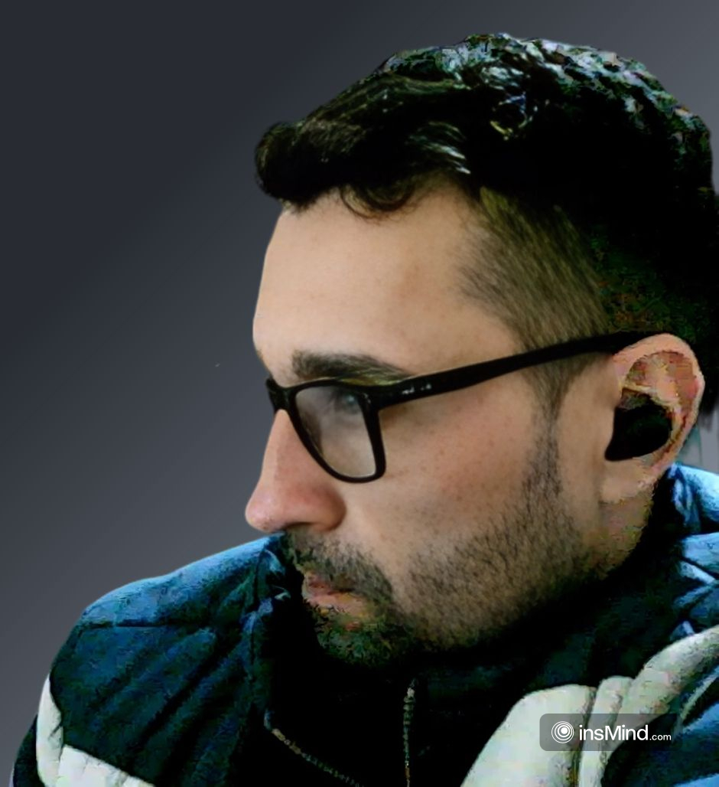
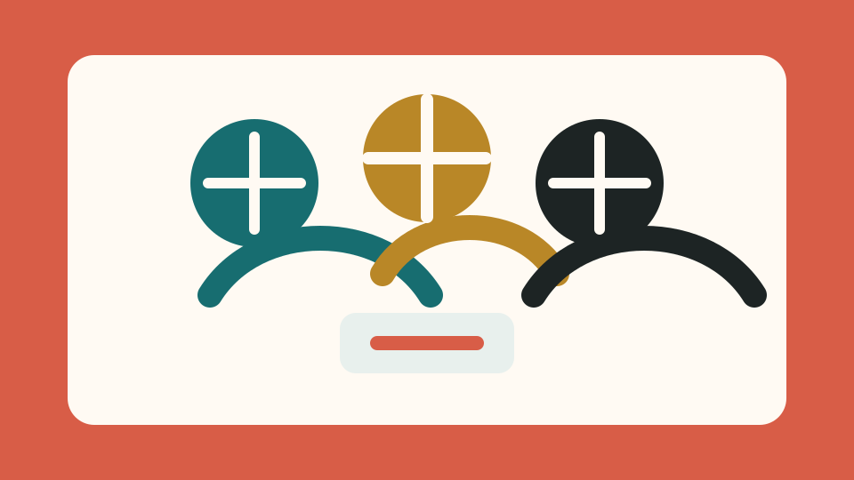

01
Ruby on Rails
Base principal para desenvolver aplicações backend organizadas e produtivas.
Portfolio pessoal
Desenvolvo solucoes backend organizadas, performaticas e bem estruturadas para sustentar aplicacoes web confiaveis.
Sobre mim

Olá! Meu nome é Angelo Souza, sou desenvolvedor backend e graduando em Análise e Desenvolvimento de Sistemas.
Meu objetivo atual é concluir a graduação, seguir me especializando na área de tecnologia e conquistar uma oportunidade no mercado para aplicar meus conhecimentos na prática, participando de projetos reais e evoluindo com boas práticas de desenvolvimento.
Atuo principalmente com Ruby on Rails, mas também tenho contato com Python, JavaScript e Kotlin. Como estudante e desenvolvedor autônomo, busco criar soluções organizadas, funcionais e com código limpo, sempre valorizando estrutura, manutenção e aprendizado contínuo.
Procuro manter uma postura educada, respeitosa e colaborativa. Gosto de interagir com novas pessoas, compartilhar minha história e aprender com experiências diferentes, pois acredito que tecnologia também é construída com comunicação, responsabilidade e troca de conhecimento.
Stack e ferramentas
Base principal para desenvolver aplicações backend organizadas e produtivas.
Linguagem de apoio para lógica, automações e resolução de problemas.
Manipulação do DOM, interações da interface e validação de formulários.
Conhecimento complementar para ampliar repertório em desenvolvimento.
Projetos
Ruby on Rails
Aplicação com integração à API do Mercado Pago para processar pagamentos e apoiar fluxos de compra com mais praticidade.

Eventos
Aplicação para organizar eventos de amigo secreto, registrar participantes, sortear pares e apoiar a comunicação do evento.
Ruby on Rails
Aplicação Rails para envio de ingressos por e-mail, facilitando a distribuição digital para estudantes e participantes.
Contato
Entre em contato pelos canais abaixo. Estou disponível para conversar sobre oportunidades, projetos e colaborações em tecnologia.